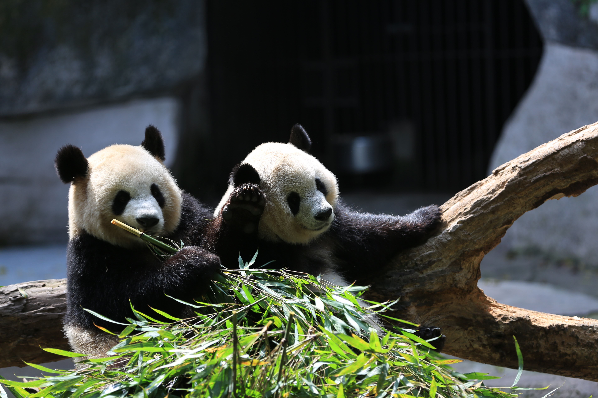

The giant panda, or more commonly refered to as panda or panda bear, are native to South Central China. They are best known for their black and white coat and rotund body. Pandas are folivores with bamboo shoots and leaves making up the majority of their diet. In the wild, however, they will occasionally eat other grasses, wild tubers, or even meat.